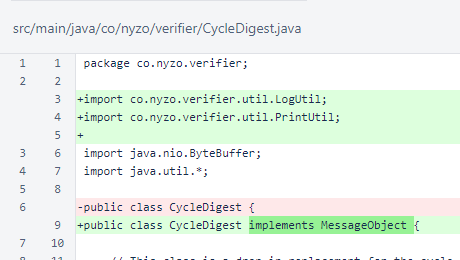
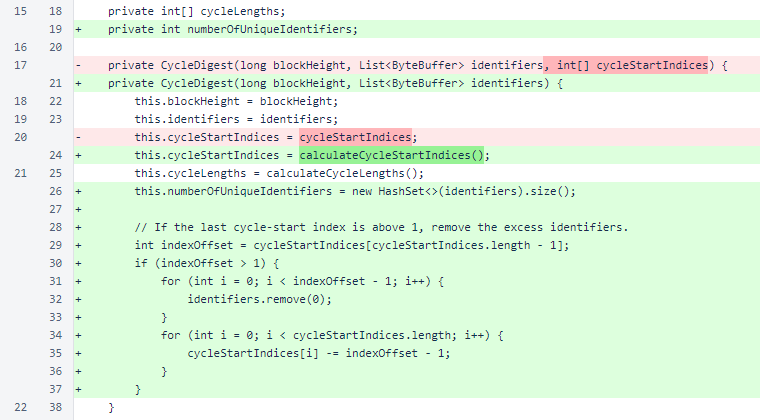
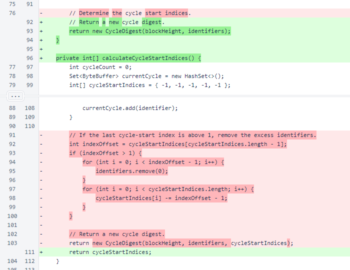
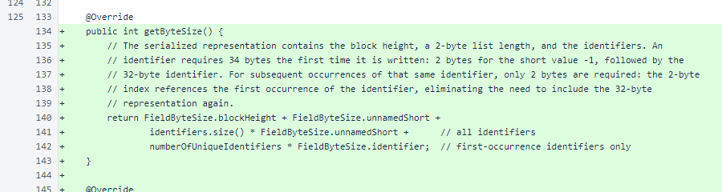
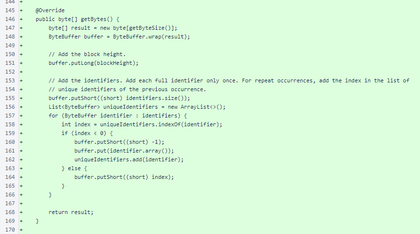
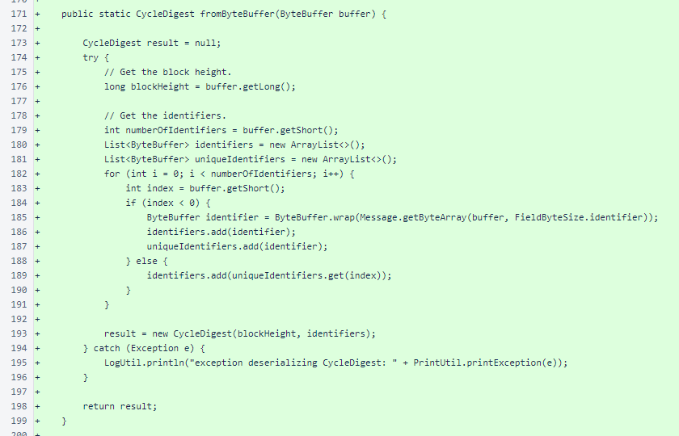
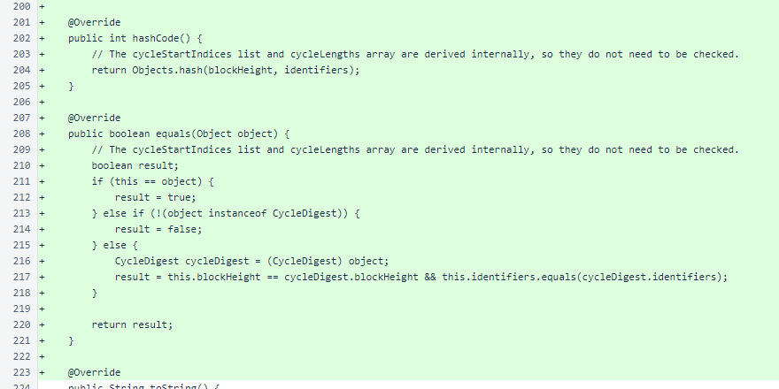
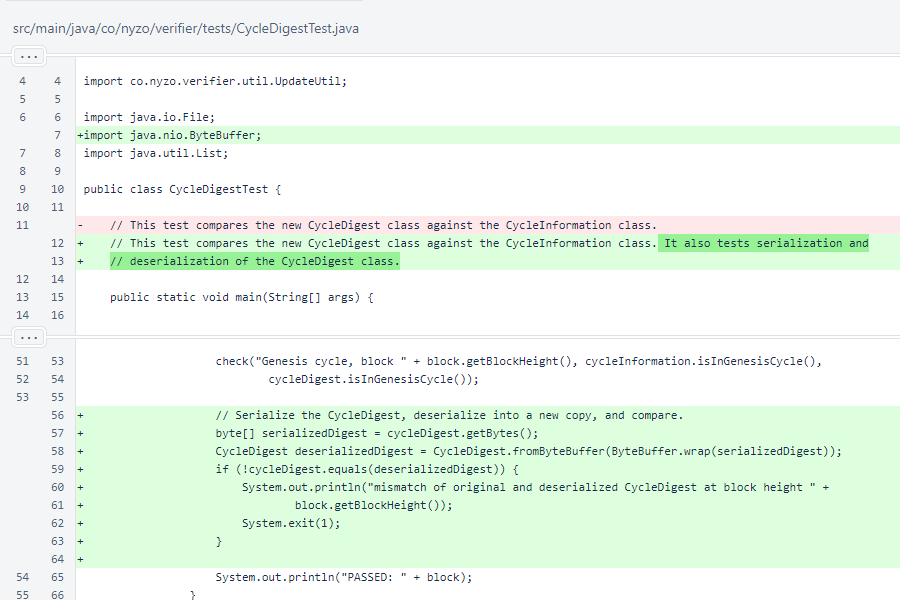

Nyzo version 598 (commit on GitHub) adds serialization and deserialization of the CycleDigest class.
This version does not yet affect any run modes.
In version 596, the CycleDigest was introduced. While this class will be useful locally, it will also be useful for transmission to other systems to aid in initialization. This version adds serialization and deserialization of CycleDigest objects. It also adds, to the CycleDigestTest class, verification of the serialization and deserialization processes.
The CycleDigest class now implements the MessageObject interface.
In CycleDigest, the numberOfUniqueIdentifiers field was added. This value is needed by the getByteSize() method, and it is expensive to calculate.
The constructor for CycleDigest no longer accepts a cycleStartIndices argument. These are now derived in the constructor. Also, the new numberOfUniqueIdentifiers field is calculated, and the identifiers list is appropriately trimmed. These changes were made to reduce code duplication with the new fromByteBuffer() method.
Calculation of cycleStartIndices in CycleDigest.digestForNextBlock() was moved to a separate method.
The getByteSize() method is required by the MessageObject interface. The comments explain how the object is serialized. This representation reduces typical serialized size by about 74% relative to a naive implementation that serializes the full identifier list directly.
The CycleDigest.getBytes() method is an obvious implementation to anyone who reads and understands the comment in getByteSize(). This method, which serializes the object, is required by the MessageObject interface.
The CycleDigest.fromByteBuffer() method deserializes the object. It is a static (class, not instance) method, so it is not a part of the MessageObject interface. However, this method is, by convention, implemented by all classes that implement the MessageObject interface.
To facilitate comparisons in CycleDigestTest, the CycleDigest.hashCode() and CycleDigest.equals() methods were implemented. In Java, overriding the hashCode() method is necessary when overriding the equals() method. If two objects are equal, they must have the same hash code.
Implementation of these methods is typically uninteresting. The hashCode() method can take advantage of the Objects.hash() method, which should be provided with all pertinent fields from the object. The equals method handles exact-object comparisons, null values, and type differences, producing a result based on comparison of all pertinent fields when the provided object is the correct type.
The CycleDigestTest class now serializes and deserializes every CycleDigest, comparing the deserialized copy to the original. If any differences are found, a message is printed and the test terminates.
